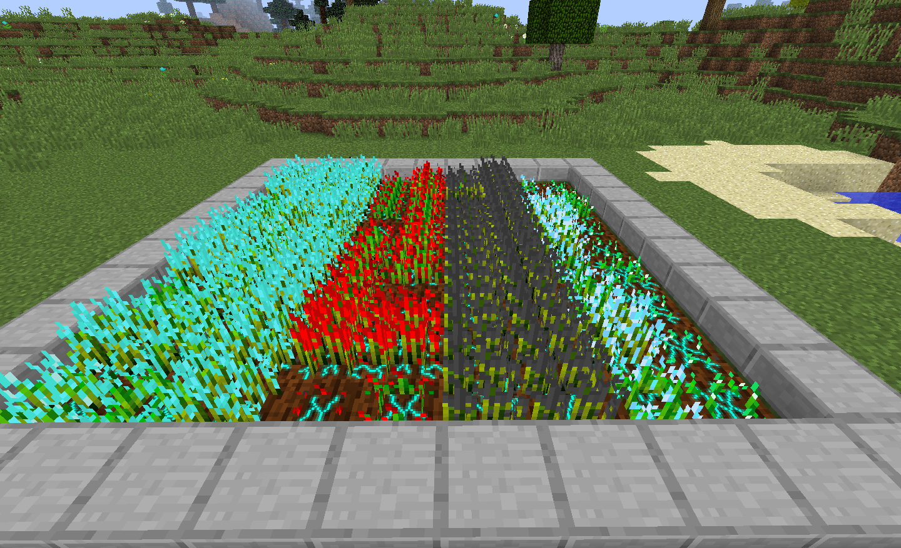

Crystalline Plants
Crystalline plants are one of three Resynth plant types.
They resemble Minecraft Wheat plants with a colour to match
the resource they grow.
Crystalline plants normally grow items that are dropped
from mining an ore, such as diamond and redstone. Seeds
for Crystalline plants are originally obtained in the same
way - by mining the ore. Occasionally, when the ore block
is mined, the seeds to grow the item will be dropped instead
of the item.
When fully grown, a the Crystalline plant can be broken
to get the seeds back and a shard. This shard can be
smelted to get the original resource (e.g. diamond) or
left in water to despawn for a chance at getting additional
seeds.
List of Crystalline Plants

A field of crystalline plants.
The following table provides the complete list
of Crystalline plants along with some additional
information.
| Plant Name |
Final Resource |
Version Added |
Enabled by Mod |
| Certus Quartz Plant |
Certus Quartz |
1.2.1 |
Applied Energistics |
| Apatite Plant |
Apatite |
1.2.1 |
Forestry |
| Mineral Plant |
Mineral Rock |
1.1.0 |
Resynth |
| Coal Plant |
Coal |
1.0-Beta |
Vanilla Minecraft |
| Diamond Plant |
Diamond |
1.0-Beta |
Vanilla Minecraft |
| Emerald Plant |
Emerald |
1.0-Beta |
Vanilla Minecraft |
| Glowstone Plant |
Glowstone Dust |
1.0-Beta |
Vanilla Minecraft |
| Lappis Lazuli |
Lappis Lazuli Dye |
1.0-Beta |
Vanilla Minecraft |
| Quartz Plant |
Nether Quartz |
1.0-Beta |
Vanilla Minecraft |
| Redstone Plant |
Redstone Dust |
1.0-Beta |
Vanilla Minecraft |